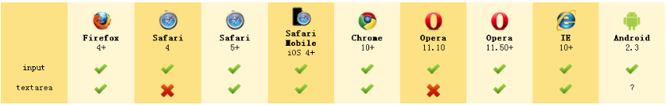

Apples
Tasty, delicious fruit!
The apple is the pomaceous fruit of the apple tree.
Red Delicious
These bright red apples are the most common found in many supermarkets.
Granny Smith
These juicy, green apples make a great filling for apple pies.
Created by ChaiChunyan / @chaichunyan
<!DOCTYPE HTML PUBLIC "-//W3C//DTD HTML 4.01//EN"
"http://www.w3.org/TR/html4/strict.dtd">
<!DOCTYPE html>
<html>
HTML5 Training
...
</html>
Apples
Tasty, delicious fruit!
The apple is the pomaceous fruit of the apple tree.
Red Delicious
These bright red apples are the most common found in many supermarkets.
Granny Smith
These juicy, green apples make a great filling for apple pies.
6 blocks used (out of 8 total)
Voter turnout: 
Copying... 25%
- Transfer rate:
- 452KB/s
- Local filename:
- /home/rpausch/raycd.m4v
Dave Raggett,
Arnaud Le Hors,
contacts for the w3c HTML activity
Address 应用于最近的article或body标签

Bubbles at work
Momentum is preserved across the wormhole. Electromagnetic radiation can travel in both directions through a wormhole, but matter cannot.
When a wormhole is created, a vortex normally forms. Warning: The vortex caused by the wormhole opening will annihilate anything in its path.
并不是所有的导航都要用
My name is Elizabeth.
My name is Daniel.
My name is Neil.
My band is called Four Parts Water.
I am British.
当用户还没有输入值时,输入型控件可能通过placeholder向用户显示描述性 说明文字或者提示信息

Slides can be nested inside of each other.
Use the Space key to navigate through all slides.
Nested slides are useful for adding additional detail underneath a high level horizontal slide.
That's it, time to go back up.
Not a coder? Not a problem. There's a fully-featured visual editor for authoring these, try it out at http://slides.com.
Press ESC to enter the slide overview.
Hold down alt and click on any element to zoom in on it using zoom.js. Alt + click anywhere to zoom back out.
Presentations look great on touch devices, like mobile phones and tablets. Simply swipe through your slides.
Hit the next arrow...
... to step through ...
... a fragmented slide.
There's different types of fragments, like:
grow
shrink
fade-out
current-visible
highlight-red
highlight-blue
You can select from different transitions, like:
None -
Fade -
Slide -
Convex -
Concave -
Zoom
reveal.js comes with a few themes built in:
Black (default) -
White -
League -
Sky -
Beige -
Simple
Serif -
Blood -
Night -
Moon -
Solarized
Set data-background="#dddddd" on a slide to change the background color. All CSS color formats are supported.
<section data-background="image.png"><section data-background="image.png" data-background-repeat="repeat" data-background-size="100px"><section data-background-video="video.mp4,video.webm">Different background transitions are available via the backgroundTransition option. This one's called "zoom".
Reveal.configure({ backgroundTransition: 'zoom' })You can override background transitions per-slide.
<section data-background-transition="zoom">
function linkify( selector ) {
if( supports3DTransforms ) {
var nodes = document.querySelectorAll( selector );
for( var i = 0, len = nodes.length; i < len; i++ ) {
var node = nodes[i];
if( !node.className ) {
node.className += ' roll';
}
}
}
}
Code syntax highlighting courtesy of highlight.js.
| Item | Value | Quantity |
|---|---|---|
| Apples | $1 | 7 |
| Lemonade | $2 | 18 |
| Bread | $3 | 2 |
These guys come in two forms, inline:
“The nice thing about standards is that there are so many to choose from”
and block:
“For years there has been a theory that millions of monkeys typing at random on millions of typewriters would reproduce the entire works of Shakespeare. The Internet has proven this theory to be untrue.”
You can link between slides internally, like this.
There's a speaker view. It includes a timer, preview of the upcoming slide as well as your speaker notes.
Press the S key to try it out.
Presentations can be exported to PDF, here's an example:
Set data-state="something" on a slide and "something"
will be added as a class to the document element when the slide is open. This lets you
apply broader style changes, like switching the page background.
Additionally custom events can be triggered on a per slide basis by binding to the data-state name.
Reveal.addEventListener( 'customevent', function() {
console.log( '"customevent" has fired' );
} );
Press B or . on your keyboard to pause the presentation. This is helpful when you're on stage and want to take distracting slides off the screen.